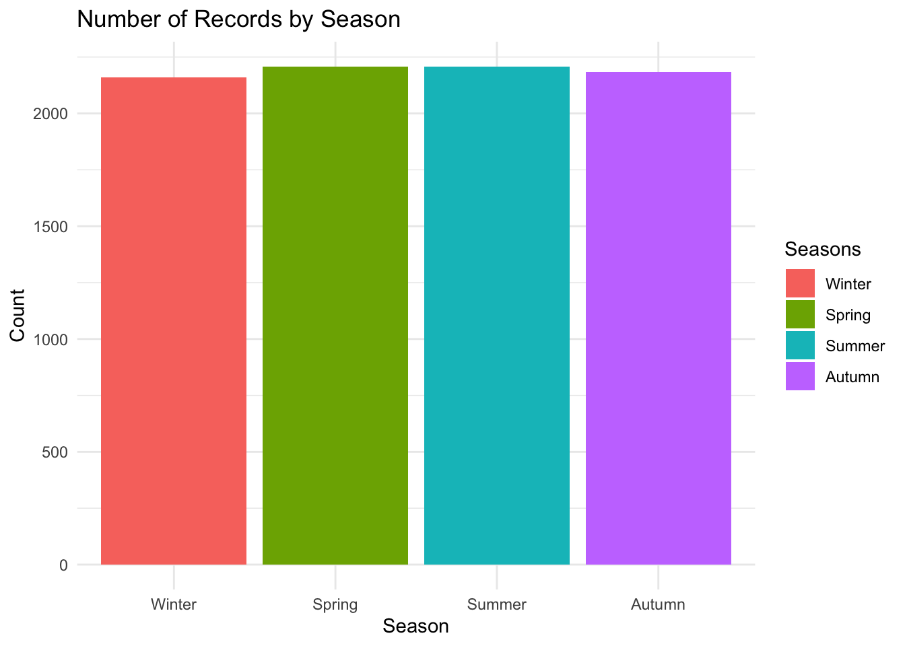
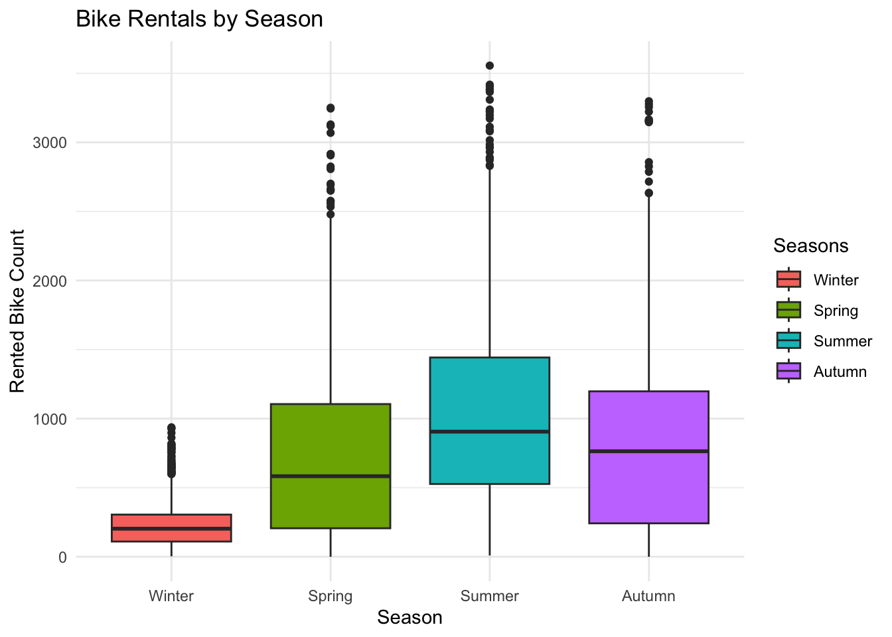
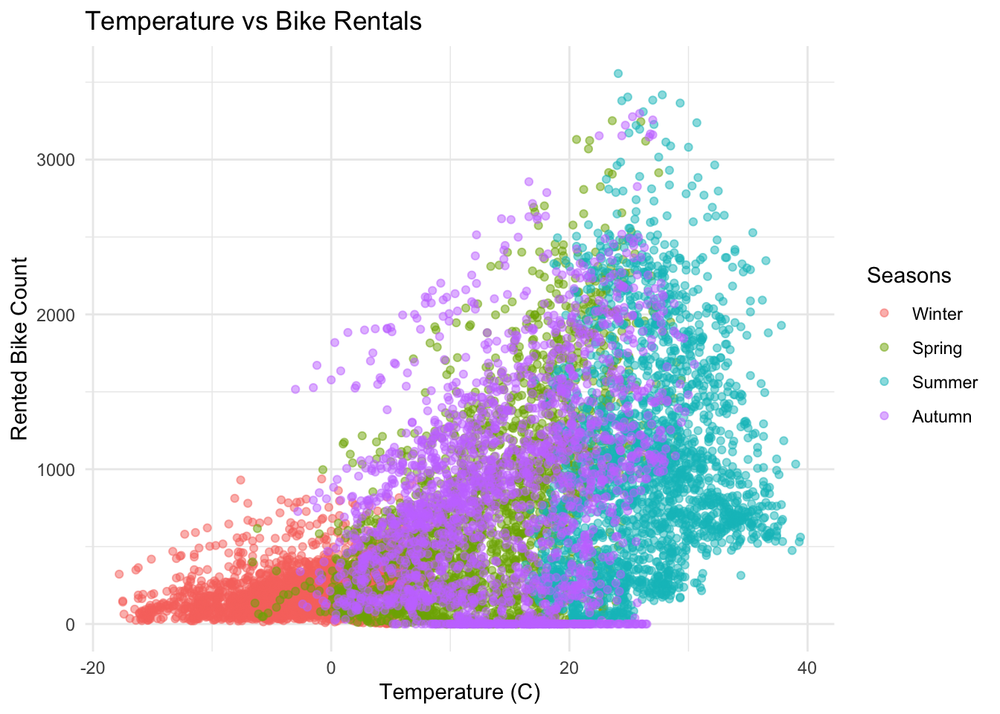
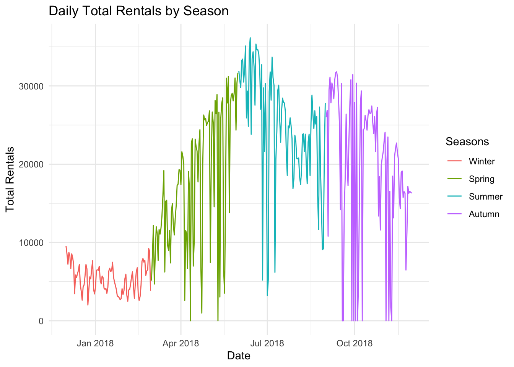
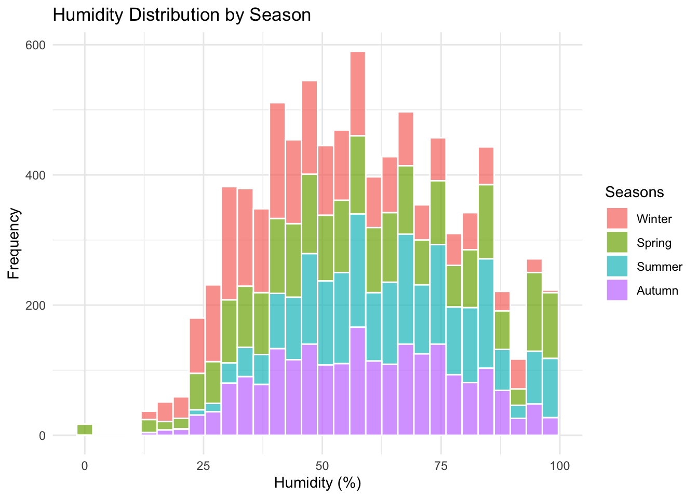
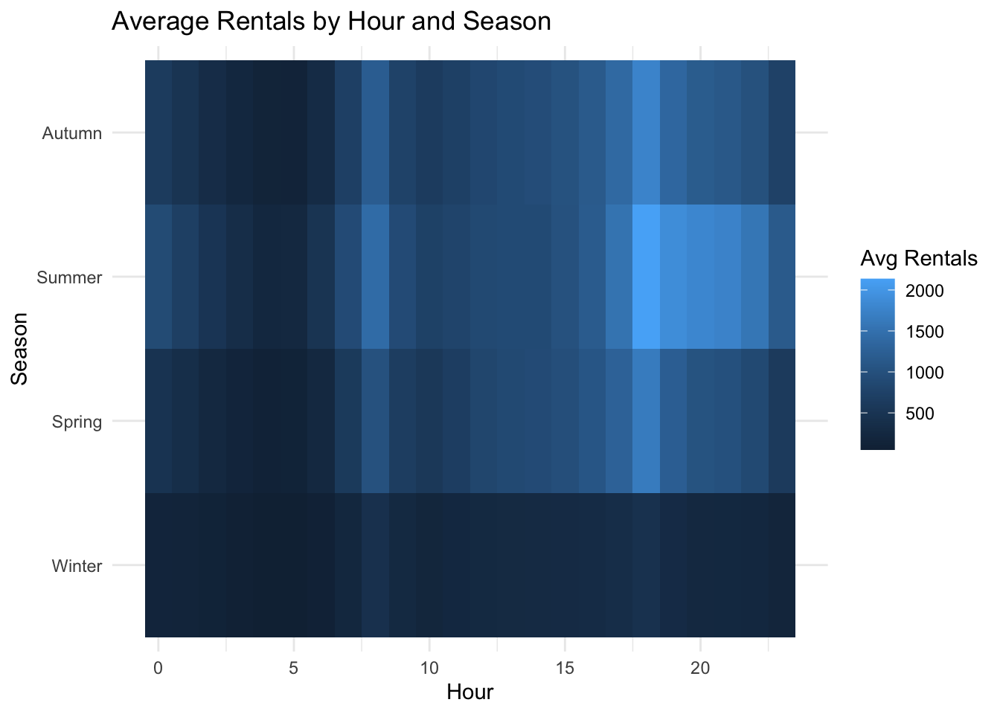

Date Rented Bike Count Hour Temperature(C)
Min. :2017-12-01 Min. : 0.0 Min. : 0.00 Min. :-17.80
1st Qu.:2018-03-02 1st Qu.: 191.0 1st Qu.: 5.75 1st Qu.: 3.50
Median :2018-06-01 Median : 504.5 Median :11.50 Median : 13.70
Mean :2018-06-01 Mean : 704.6 Mean :11.50 Mean : 12.88
3rd Qu.:2018-08-31 3rd Qu.:1065.2 3rd Qu.:17.25 3rd Qu.: 22.50
Max. :2018-11-30 Max. :3556.0 Max. :23.00 Max. : 39.40
Humidity(%) Wind speed (m/s) Visibility (10m) Dew point temperature(C)
Min. : 0.00 Min. :0.000 Min. : 27 Min. :-30.600
1st Qu.:42.00 1st Qu.:0.900 1st Qu.: 940 1st Qu.: -4.700
Median :57.00 Median :1.500 Median :1698 Median : 5.100
Mean :58.23 Mean :1.725 Mean :1437 Mean : 4.074
3rd Qu.:74.00 3rd Qu.:2.300 3rd Qu.:2000 3rd Qu.: 14.800
Max. :98.00 Max. :7.400 Max. :2000 Max. : 27.200
Solar Radiation (MJ/m2) Rainfall(mm) Snowfall (cm) Seasons
Min. :0.0000 Min. : 0.0000 Min. :0.00000 Winter:2160
1st Qu.:0.0000 1st Qu.: 0.0000 1st Qu.:0.00000 Spring:2208
Median :0.0100 Median : 0.0000 Median :0.00000 Summer:2208
Mean :0.5691 Mean : 0.1487 Mean :0.07507 Autumn:2184
3rd Qu.:0.9300 3rd Qu.: 0.0000 3rd Qu.:0.00000
Max. :3.5200 Max. :35.0000 Max. :8.80000
Holiday Functioning Day
Length:8760 Length:8760
Class :character Class :character
Mode :character Mode :character
3. Tables
One-way table (Seasons)
table(bikeData$Seasons)
Winter Spring Summer Autumn
2160 2208 2208 2184
There are about the same number of records for each season - winter, spring, summer, and autumn, meaning the data is evenly spread across the year.
Two-way table (Seasons vs Holiday)
table(bikeData$Seasons, bikeData$Holiday)
Holiday No Holiday
Winter 192 1968
Spring 72 2136
Summer 48 2160
Autumn 120 2064
Most of the days are “No Holiday.” Holidays make up only a small part of the records in every season.
4. Numeric Summaries by Season
bikeData %>%group_by(Seasons) %>%summarise(mean_rentals =mean(`Rented Bike Count`, na.rm =TRUE),median_rentals =median(`Rented Bike Count`, na.rm =TRUE),sd_rentals =sd(`Rented Bike Count`, na.rm =TRUE))
Average rentals go up in warmer seasons. Winter has the lowest average, while summer has the highest.
Spring and autumn sit in the middle, showing a steady increase and decrease as the weather changes.
5. Plots
Plot 1 – Bar plot (Records by Season)
ggplot(bikeData, aes(x = Seasons, fill = Seasons)) +geom_bar() +labs(title ="Number of Records by Season",x ="Season", y ="Count") +theme_minimal()

The bar chart confirms that data is evenly distributed across all seasons. This ensures each season has enough information for comparison.
Plot 2 – Boxplot (Rentals by Season)
ggplot(bikeData, aes(x = Seasons, y =`Rented Bike Count`, fill = Seasons)) +geom_boxplot() +labs(title ="Bike Rentals by Season", x ="Season", y ="Rented Bike Count") +theme_minimal()

Bike rentals vary widely in summer and are much lower in winter. The spread of data is larger in warmer months, showing more rental activity and fluctuations.
Plot 3 – Scatter plot (Temperature vs Rentals)
ggplot(bikeData, aes(x =`Temperature(C)`, y =`Rented Bike Count`, color = Seasons)) +geom_point(alpha =0.5) +labs(title ="Temperature vs Bike Rentals", x ="Temperature (C)", y ="Rented Bike Count") +theme_minimal()

There’s a clear upward trend between temperature and bike rentals. Warmer temperatures lead to more rentals, while cold days see very few bikes rented.
Plot 4 – Line plot (Daily Rentals over Time)
daily <- bikeData %>%group_by(Date, Seasons) %>%summarise(total_rentals =sum(`Rented Bike Count`, na.rm =TRUE), .groups ="drop")ggplot(daily, aes(x = Date, y = total_rentals, color = Seasons)) +geom_line() +labs(title ="Daily Total Rentals by Season", x ="Date", y ="Total Rentals") +theme_minimal()

Rental activity changes over the year. The time series shows clear seasonal patterns, with peaks in the middle of the year (warmer month) and dips in colder months. It captures how rentals follow temperature trends over time.
Plot 5 – Histogram (Temperature)
ggplot(bikeData, aes(x =`Humidity(%)`, fill = Seasons)) +geom_histogram(bins =30, color ="white", alpha =0.7) +labs(title ="Humidity Distribution by Season",x ="Humidity (%)", y ="Frequency") +theme_minimal()

Humidity tends to stay in a comfortable mid-range between 40% and 70%. Very dry or very humid days are rare, meaning weather conditions were usually moderate.
Plot 6 – Heatmap (Average Rentals by Hour and Season)
avg_hour <- bikeData %>%group_by(Hour, Seasons) %>%summarise(avg_rentals =mean(`Rented Bike Count`, na.rm =TRUE), .groups ="drop")ggplot(avg_hour, aes(x = Hour, y = Seasons, fill = avg_rentals)) +geom_tile() +labs(title ="Average Rentals by Hour and Season", x ="Hour", y ="Season", fill ="Avg Rentals") +theme_minimal()

People rent bikes most often around 8 AM and 6 PM, matching commute hours. Summer shows the brightest spots, meaning more bikes were used during warm weather and busy times.